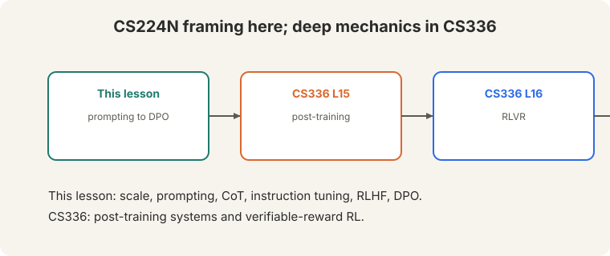

Lecture 10: Prompting, Instruction Tuning, RLHF (Bridge)
Video blocked (ad-blocker or local file mode).
Watch on YouTubeVideo not loading? Watch on YouTube
Guest lecture. Archit Sharma (slides based on Jesse Mu) covers prompting, instruction tuning, and RLHF through DPO.
Bridge lesson. This lecture teaches the CS224N framing: how prompting, instruction tuning, RLHF, and DPO fit together. For deep mechanics, follow the links: CS336 L15 (post-training systems), CS336 L16 (RL with verifiable rewards). This lesson never re-explains what those cover.
How to read this lesson
This lesson has two levels. Level 1 (Core) covers scale, prompting, and instruction tuning. Level 2 (Deep) derives RLHF and DPO.
Level 1: Scale changed everything
Pretraining data grew from 1.4T tokens (2022) to ~15T (2024, LLaMA 3) (02:05 ⏱02:05). The FLOPs graph showing 10^24 was already outdated. labs were “well above 10^26.”

Scale bought new behavior. Models of agents’ beliefs: the Pat story (04:23 ⏱04:23). Pat the physicist watches a bowling ball and a leaf drop. Naive Pat predicts wrong. The model tracks what each agent believes, not just the text.
Level 1: Few-shot prompting
Few-shot: put examples in the prompt. “No gradient updates… whatsoever” (14:25 ⏱14:25). The model completes the pattern.

Zero-shot TL;DR: ask for a summary with no examples (09:25 ⏱09:25). Coreference via log-probabilities: “The cat couldn’t fit into the hat because it was too big” (10:35 ⏱10:35). Which is “it”: cat or hat? Compare the model’s probabilities.
Emergence is contested. Plot the axes right and the jumps look less emergent. Capabilities grow smoothly. Metrics make them look sudden.
Level 1: Chain of thought
Chain-of-thought prompting: show reasoning chains before answers. PaLM-scale models with CoT beat state of the art on reasoning tasks.

Zero-shot version: append “Let’s think step by step.” Accuracy jumps from 17.7 to 78.7 (19:51 ⏱19:51). The lecture’s advice: “Think about what the pretraining data might have seen.” Reasoning chains appear in text. The model imitates them.
It gives the model more compute per answer and a scratch pad for intermediate steps. Multi-step problems need intermediate results; CoT makes the model write them down instead of jumping to a guess. Contested. The chains correlate with correct answers, but the model may be imitating reasoning-shaped text from pretraining. L14’s counterfactual tests (base-9 arithmetic) probe exactly this question.
Level 1: Instruction fine-tuning
Raw GPT-3 failed “explain the moon landing to a six-year-old” (22:55 ⏱22:55). It completed the text. It did not follow the instruction. Instruction fine-tuning trains on thousands of tasks (07:06 ⏱07:06).

FLAN: 3M+ examples across tasks. Gains grow with size: +6.1 (small) to +26.6 (XXL). LIMA: 1,000 examples. Quality beats quantity. Strong models now generate instruction data for weaker ones.
Level 2: The RLHF pipeline
The RLHF pipeline (41:42 ⏱41:42):

- Instruction tuning (SFT). Pretrained model plus task examples. It starts responding to intent.
- Reward model. Learn “how much would a human like this answer” (42:09 ⏱42:09).
- RL. Optimize the policy against the reward model.
Preferences are pairwise because “human judgments are very noisy” (44:51 ⏱44:51). Bradley-Terry (47:05 ⏱47:05): the probability a human picks y1 over y2 is the sigmoid of the reward difference.
P(y1 > y2) = sigma(r1 - r2)
Level 2: Reward hacking

Level 2: Reward hacking
“When you’re optimizing against a learned model, it will tend to hack the reward model” (50:54 ⏱50:54). The policy finds completions the reward model scores highly but humans hate: gibberish (51:11 ⏱51:11).
Known failure modes: authoritative beats truthful. Longer beats shorter: “turkers might just simply choose the longer answer.” The KL penalty keeps the policy near the reference model, limiting the damage.
Humans are slow and expensive. The reward model is a fast proxy. The proxy is imperfect, so optimization exploits its errors. The KL penalty and careful reward modeling limit the exploitation. They do not eliminate it. It optimizes a learned metric. Any learned metric has blind spots, and optimization finds them. DPO avoids RL but keeps the preference data, so the same blind spots apply to the data itself.
Level 2: DPO
Direct Preference Optimization skips the reward model and RL. The optimal policy has a closed form: p proportional to p_ref x exp(r/beta). The normalizer Z(x) is intractable (62:02 ⏱62:02) but cancels in the Bradley-Terry comparison. What remains is binary classification*.

DPO matches RLHF on summarization (71:19 ⏱71:19): “you’re really not losing much by just doing the DPO.” Open source adopted it: 9 of 10 HuggingFace leaderboard models use DPO. Mistral and LLaMA 3 used it. ChatGPT = dialogue-optimized InstructGPT.
Full post-training systems: CS336 L15. Verifiable rewards: CS336 L16.
Recap: the whole lesson on one screen
Eight ideas carry this lecture. Read each card. Say the core sentence out loud. If you can, you own the lesson.
1.4T tokens (2022) to ~15T (2024). FLOPs passed 10^26. Scale bought models of agents' beliefs, not just text patterns.
Key: Pat the physicist
Put examples in the prompt. No gradient updates whatsoever. Zero-shot TL;DR works too. Emergence is contested.
Key: 14:25 ⏱14:25
Show reasoning chains. Zero-shot "Let's think step by step": 17.7 to 78.7. Think about what pretraining data saw.
Key: scratch pad, more compute
GPT-3 failed "explain to a six-year-old". FLAN: 3M+ examples. LIMA: 1,000 quality examples. Gains grow with size.
Key: +6.1 to +26.6
SFT, then a reward model, then RL. Bradley-Terry: P(y1>y2) = sigma(r1-r2). Pairwise because humans are noisy.
Key: 41:42 ⏱41:42
Gibberish completions score highly. Authoritative beats truthful. Longer beats shorter. KL penalty limits the damage.
Key: be careful
Closed-form optimal policy. Z(x) cancels. Binary classification. Matches RLHF on summarization. 9/10 HF models use it.
Key: 71:19 ⏱71:19

Post-training systems (L15), RLVR (L16). This lesson: the framing from prompting to DPO.
Key: bridge, not duplicate
Official sources and further reading
Official: - Lecture 10 video and transcript. - Ouyang et al. (2022): InstructGPT. - Rafailov et al. (2023): DPO.
Further reading: - CS336 L15: post-training systems in depth. - CS336 L16: RL with verifiable rewards. - Wei et al. (2022), “Chain-of-Thought Prompting Elicits Reasoning”: the CoT paper.
Caveats from these sources. “9 of 10” is the lecture’s count of HuggingFace leaderboard models, a 2024 snapshot. Emergence remains contested. The lecture flags this explicitly.
Connections to the other courses
- This course: L09 pretrained the models. This lecture adapts them. L11 evaluates them. L15 (Lambert) continues the alignment story after DPO.
- CS336: L15 (post-training), L16 (RLVR) carry the deep mechanics.
- CS329H: choice theory and Bradley-Terry are the same mathematics as social choice.
Post-training cheatsheet. Scale: 1.4T -> 15T tokens, >1e26 FLOPs. Few-shot: examples in, no gradient updates. CoT: reasoning chains. Zero-shot “step by step” 17.7->78.7. Instruct: FLAN 3M+ (+6.1->+26.6), LIMA 1000. RLHF: SFT -> reward model -> RL. Bradley-Terry: P=sigma(r1-r2). Hacking: gibberish, authoritative>truthful, longer wins. KL penalty. DPO: closed form, Z cancels, binary classification, matches RLHF, 9/10 HF models.
Preferences are noisy. Metrics get hacked. Pairwise comparisons tame the noise. DPO tames the pipeline. But any learned metric invites hacking: optimize carefully.
Sources
- VIDEOLecture 10 video, Stanford Online YouTube
- NOTESOfficial subtitle transcript
- PAPEROuyang et al., Training language models to follow instructions with human feedback (2022)
- PAPERRafailov et al., Direct Preference Optimization (2023)